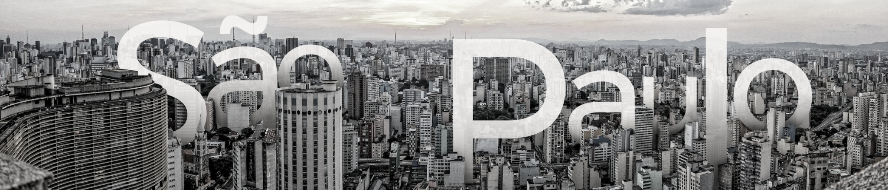

O Estado de São Paulo é uma região vibrante e influente no Brasil. Com uma economia forte e diversificada, destaca-se como um centro financeiro e industrial. Sua capital, São Paulo, é um polo cultural e turístico, com museus, teatros e atrações emblemáticas. No entanto, como em qualquer lugar, há desafios a serem enfrentados. A desigualdade social é uma realidade que precisa ser abordada, com disparidades entre regiões ricas e pobres. O trânsito intenso nas vias e as dificuldades de transporte público também são questões a serem superadas.